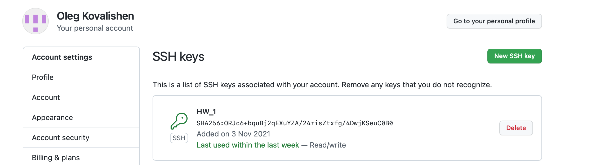

Homework №1 Kovalishen Oleg
git config --global user.name blabla-поміняти ім'я
git config --global user.email blabal@bla-поміняти пошту
git init-створення git-репозиторія
git status-перевірка статусу.
git add-добавити усі файли в буфер
git log-найчастіша команда, показує логи (коміти)
git checkout-команда дає змогу переходити назад на гілку, в якій ви були раніше.
git push-відправляє внесені зміни на віддалений репозиторій, який раніше був заданий
git pull-команда відповідає за скачування даних із сервера. Процес дуже схожий на клонування репозиторію, але тут завантажуються не всі комміти, а лише нові.
git merge-злиття (об'єднання) гілок
git clone-команда використовується для клонування репозиторія
Що таке .gitignore файл
gitignore файл-необхідний для приховування файлів і папок від системи контролю версій Git. Зазвичай приховують конфігураційні файли (особливо з паролями), тимчасові файли та папки
Advanced
git revert-відкат коміту шляхом створення нового
git reset-команда для скасування локальних змін у репозиторії
git rebase-це процес переміщення послідовності коммітів до нового базового коміту чи їх об'єднання.
git cherry-pick-команда використовується для перенесення окремих комітів з одного місця репозиторію до іншого
git stash-команда бере ваші зміни, підготовлені та непідготовлені до фіксації, зберігає їх для подальшого використання та прибирає з робочої області
Підключити github через SSH
